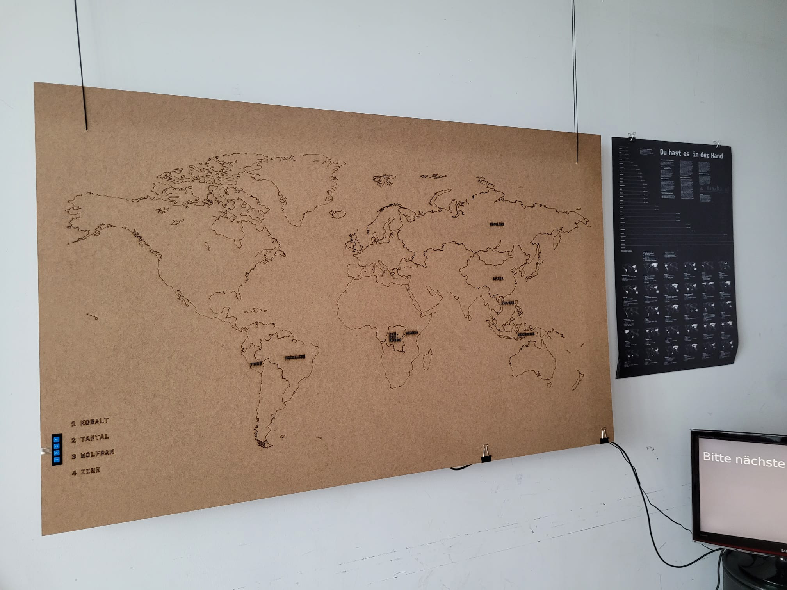

Wir sind drei Wirtschaftsinformatik Studierende der HTWG Konstanz und beschäftigen uns in unserem Teamprojekt mit der Endlichkeit von Rohstoffen, Im vorherigen Semester ist im Rahmen des Projektes bereits ein Prototyp einer Weltkarte entstanden. Diese Weltkarte enthält 4 Knöpfe, die jeweils einen, für die Smartphone relevanten Rohstoff, repräsentieren. Wird einer diese Knöpfe gedrückt, leuchtet der Name der Länder auf, in denen die größe Menge dieser Stoffe abgebaut wird. Außerdem zeigt ein Bildschirm wie lange die Reserven dieses Stoffes noch halten werden. Die Umsetzung erfolgt über einen RaspberryPi, der sowohl die Knöpfe als auch die LEDs kontrolliert. Anhand dieser Website soll nun der Prototyp nun einen digitalen Zwilling bekommen. Unsere interaktive Website zeigt ebenfalls auf Knopfdruck die Länder, indem die Stoffe abgebaut werden. Außerdem interagieren Website und Prototyp miteinander. Somit können die LEDs auf der Weltkarte auch dann leuchten, wenn der Knopf lediglich auf der Website gedrückt wurde.
